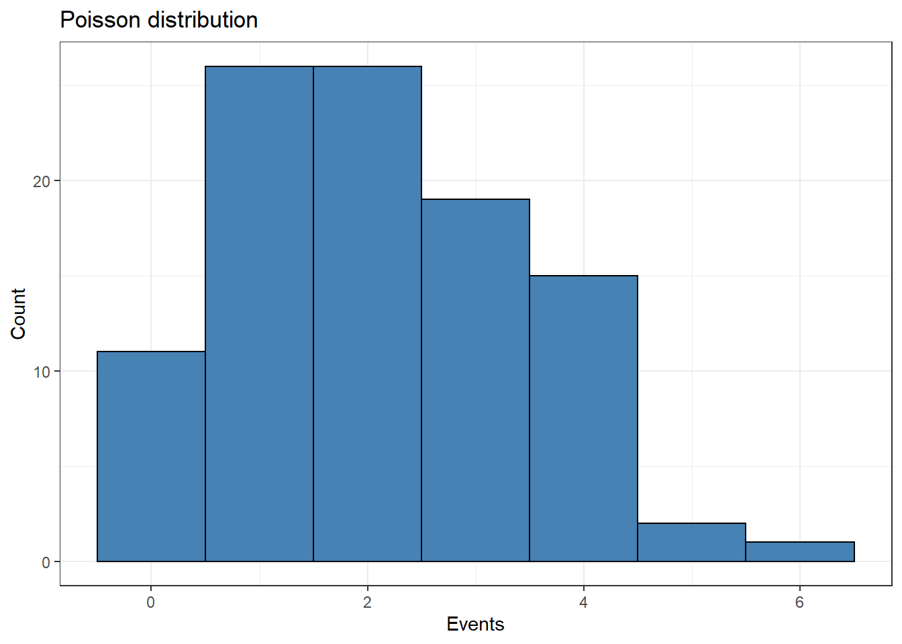

In this post, I will discuss briefly what is the Poisson distribution and describe two examples extracted from research articles in the genomics field. One of them based on the distribution of structural variants across the genome and other about de novo variants in a patient cohort.
Poisson distribution
In genomics, many of the events we observe correspond to countable values. For instance, the number of mutations found in a specific type of genomic regions or a patient cohort, sequence reads…The Poisson distribution is a discrete probability model that takes countable numbers as the mentioned before and will be defined as events.
To calculate a Poisson distribution, we need to specify a single parameter which is called lambda (\[\lambda\]). This value is known as the rate parameter and defines the mean number of events in a given interval. In other words, if we know the total number of events of our system, we just need to divide it by the number of intervals. We will see further some examples of this.
Once we know lambda, we can calculate the probability of seeing \[/x\] number of events on a given interval, following this formula:
In the next example, we are going to generate a Poisson distribution of 100 samples whose lambda value is equal to 2 with the rpois function:
# Load librarieslibrary(dplyr)library(ggplot2)library(gganimate)library(tidyr)tibble(x =rpois(n =100, lambda =2)) %>%ggplot(aes(x)) +geom_histogram(binwidth =1, fill ='steelblue', color ='black') +theme_bw() +labs(title ='Poisson distribution', x ='Events', y ='Count')

An interesting aspect about the Poisson distribution: the mean and variance of the distribution are equal to the value of lambda. Therefore, the probability of finding an interval with 3 events (for instance) is higher as long as we increase the value of lambda.
Warning: No renderer available. Please install the gifski, av, or magick package
to create animated output
NULL
In the example above, we are generating 30 times a set of 1000 random values following a Poisson distribution, increasing each time the value of lambda (from 1.2 to 7). The probability of finding an interval with 7 events (red line) is higher as long as we increase lambda.
As we said before, we only need lambda to generate a Poisson distribution. Generally, we calculate this value if we know beforehand the number of events and intervals (as we will see in the second example, this is not always the case).
Let’s put some examples of what an interval or event can be:
Intervals. We can define intervals as fixed time units, such as days, months, years…or also delimited areas of a geographical region (see this nice post of cancer clusters or this one about the distribution of impacts of V-1 and V-2 missiles during WWII).
Events. The amount of clicks on a banner or the number of homicides or blackouts every year…An important condition is that each event is independent of each other (events occur independently).
Every time, we perform a Poisson distribution, we always ask ourselves the same question: are these events distributed randomly across the intervals?
Poisson distribution in genomics
In genomics, as many other fields, there are different ways to define intervals and events. In the next examples, we will explore two completely different approaches:
Example 1 : Structural variants in the human genome
Structural Variants (SVs) are mutations of more than 50bp and include deletions, duplications, inversion, translocations…These types of variants are important causes of multiple disorders, such as autism, schizoprenia, autoimmune diseases or developmental disorders.
To do this, the researchers defined each structural variant as an event. Next, they divided the human genome into 100 kb intervals and after discarding incomplete intervals (the intervals need to be fixed), they got a total of 28,103 intervals.
The number of structural variants is 42,758 SVs. Therefore, to calculate lambda, they just had to divide this number by the total number of intervals. Finally, they generated a Poisson distribution and defined as “hotspot regions” all the intervals that exceeded the 99th percentile (6 SVs per 100 kb interval) concluding that these intervals had more SVs than expected by chance. Furthermore, they were able to identify “desert regions” as those intervals with a lower nº of SVs as compared with the number expected by chance.
Example 2 : De novo variants in neurodevelopmental disorders
In this article De novo mutations in regulatory elements in neurodevelopmental disorders [2], the researchers explore the impact of de novo variants (those present on children but not their parents) on regulatory regions of the genome in a cohort of patients with neurodevelopmental disorders. The majority of patients in this cohort did not present any de novo mutations (DNMs) in protein-coding genes. Therefore, a plausible hypothesis is to find some of these DNMs in those regions of the DNA yet unexplored: regulatory regions.
Most of the human genome (98%) do not encode for protein regions. Therefore, the researchers decided to narrow down the search and focus only on those regulatory regions based on two features: regions highly conserved or experimentally validated.
Finally, they found DNMs mapping this set of regulatory regions, which is great since it allows us to identify the causal mutation and find a diagnos….but wait a minute: Each person’s genome harbors many variants and most of the time, these variants are not harmful. So, we expect to find variants randomly in these regulatory regions just by chance. Yes, as you can guess…here it comes the Poisson distribution.
The researchers knew this fact, therefore, to validate their results, they performed (surprise…) a Poisson distribution. First, they calculated the lambda parameter following the next approach:
They focused on 6,239 individuals and counted the number of mutations found in regulatory regions. Furthermore, for each region, they calculated the expected number of mutations given the nucleotide context.
Once they got the expected number of mutations for each regulatory region, they summed the values and multiplied by the total number of individuals (6,239) to obtain lambda. This value represents the expected number of mutations. Finally, they generated a Poisson distribution with lambda and compared it with the number of observed mutations. This allowed them to demonstrate, first, there were some subgroups of regulatory regions with an excess of the novo variants and second, this excess could be considered as statistically significative. These significant regions were mostly featured by fetal brain DNase signal.
Contrary to what we saw at the beginning of the post, the approach to calculate lambda has been completely different in the second example. Precisely, this versatility makes the Poisson distribution one of the most popular ways to model counted data.
Notes
We discussed here about two different scenarios whose events were defined as mutations. But the Poisson distribution can help us to modelate other kind of events, for instance, sequence data. One of the most used techniques for the identification of peaks in Chip-seq analysis is called Model-based Analysis of ChIP-Seq data ( MACS). This program generates a Poisson distribution to identify regions with a higher number of reads than just by chance.
When we use the genome to produce fixed size intervals to generate a Poisson distribution, an important aspect, it is the genome size. In principle, we already know this value: ~3,100 milions b.p (hg19) and ~ 3,200 millions b.p (hg38). Unfortunately, there are many inaccesible regions (gap regions) represented by Ns. Therefore, the use of the total size would artificially decrease the value of lambda and increase the number of false findings. As a consequence, we need to provide a effective genome size.
References
[1] Lin, Yen-Lung, and Omer Gokcumen. “Fine-scale characterization of genomic structural variation in the human genome reveals adaptive and biomedically relevant hotspots” Genome biology and evolution 11.4 (2019): 1136-1151.
[2] Short, Patrick J., et al. “De novo mutations in regulatory elements in neurodevelopmental disorders.” Nature 555.7698 (2018): 611-616.